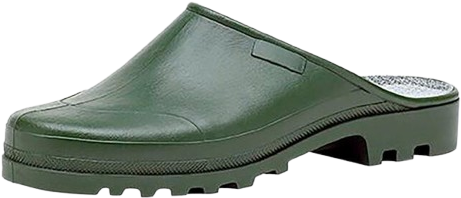
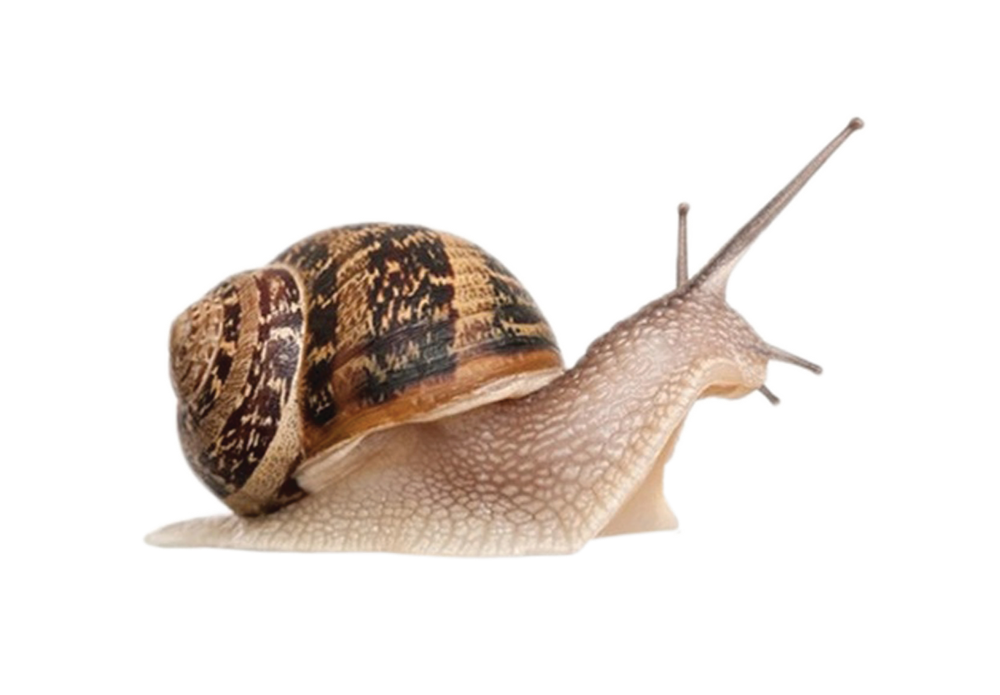
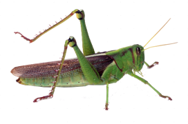
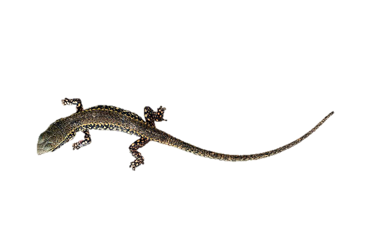
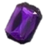
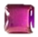
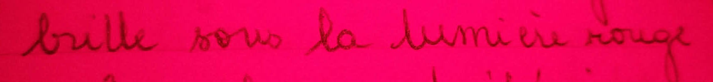
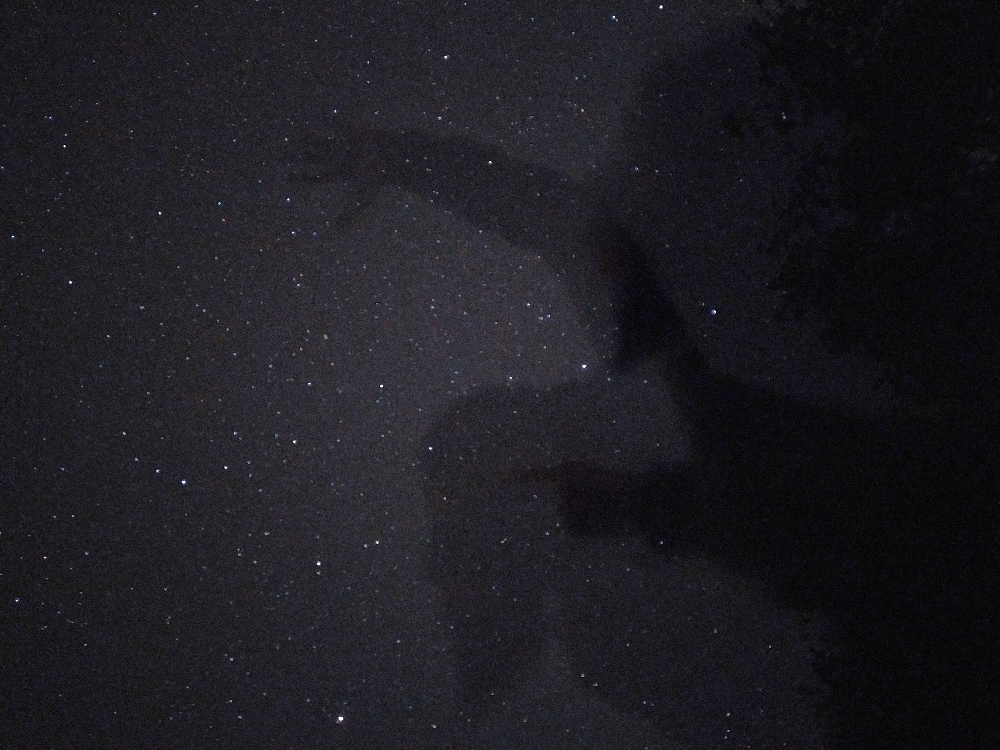
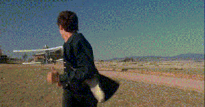

En premier, il y a l'odeur de la nuit après une journée un peu chaude (un peu humide, chlorophyllée), la fraîcheur, comme si la Terre se détendait, et surtout aucune odeur de pollution. Dans ces moments, une voiture peut passer de temps en temps, mais ça ne me dérange pas. Les fréquences de son vrombissement appartiennent à ce qu'on appelle le "buit gris" : c'est un son composé de toutes les fréquences, mais les fréquences basses et aigues ont une intensité sonore plus forte que les médiums, ce qui fait que ça a un effet apaisant.
J'apprécie aussi qu'on entende les grillons qui frottent leurs ailes. C'est quelque chose que j'oublie après quelques minutes dehors, mais je l'oublie aussi quand je retourne à la ville, ainsi je suis éternellement surprise quand je retourne chez mes parents. (Bon la vérité c'est que jsp si j'ai mis un bruit de grillon ou de criquet sur l'audio help les naturalistes.)
Quelque chose de très important aussi pour moi : les étoiles. A la ville, je n'en vois que quelques unes. Mais ici,
c'est spectaculaire.
J'aime sortir juste pour les observer. Je les retrouve aussi dans l'encre de mon stylo, qui brille sous la lumière rouge de ma frontale,
lorsque j'écris sur ce carnet.

Je connais surtout la carte du ciel au mois d'août. Depuis chez ma mère, où il y a peu de pollution lumineuse, on voit toujours très bien les bras de la Voie Lactée. En attendant de me procurer un trépied, j'essaie de prendre des photos au téléphone.

Je sors les poubelles la nuit pour grapiller quelques instants du spectacle. J'ai pris les galoches de ma mère et une frontale qui trainait. La lumière blanche se réfléchit sur les traces de cagouilles sur les murs de pierre. Ça aussi, c'est fascinant. Si on s'approche, les couleurs se déplacent le long de la surface visqueuse.
L'été il fait chaud, je veux ouvrir la fenêtre la nuit. Evidemment, des moustiques rentrent. Mais il y a aussi un lézard, qui se cachait de la chaleur derrière les volets, auprès de la pierre fraîche, qui se décide à rentrer. Bien entendu, il ne peut pas remonter tout seul vers la fenêtre, la tapisserie n'est pas du tout adaptée. J'essaie mollement de le coincer pour le faire remonter, mais il a trop peur et j'ai envie de dormir. Tant pis, il restera derrière le canapé, tant qu'il ne gigote pas trop... C'est alors le moment choisi par une énorme sauterelle pour rentrer à son tour. Elle vole de manière rectiligne, et ce que je veux dire par là c'est que ce qui devait arriver arriva ; elle finit violemment par se prendre un mur. Je rallume la lumière, sors de mon lit, et forme alors un cône avec un bout de papier avant de partir à sa recherche. J'aime les insectes, mais comme je l'ai déjà dit, j'ai envie de dormir, et avec la fatigue son vol m'évoque juste une énorme moto. Elle me rase la tête plusieurs fois avant de se poser dans le coin opposé. J'ai un peu l'impression d'être dans Arizona Dream d'Emir Kusturica (scène inspirée de La Mort aux Trousses de Hitchcock mais je préfère être dans un film de Kusturica).

A chaque fois qu'elle atterrit quelque part, j'espère qu'elle aussi s'endorme, mais non, elle repart de plus belle.
...
Je laisse tomber ?
...
Ou plutôt je décide de l'accepter dans cet espace que j'aurais voulu pour moi toute seule et essaie de faire
abstraction de ses vrombissements. J'essaie de me les imaginer loin, loin, de l'autre côté de la rivière.
Encore plus loin, de l'autre côté du pont de xxx. Ça
commence à fonctionner. Ce ne sont plus que des murmures.
Des murmures, j'en perçois aussi de l'autre côté du plafond,
sur le toit de la maison. Ce sont des corneilles qui, pas encore couchées, se racontent toutes excitées la soirée
qu'elles viennent de passer.
L'une était au cirque et a vu un super numéro de corde à sauter. L'autre était partie voir la mer, mais elle doit
déménager.
Crédits : bordures dollarchive, gif insecte Baals-Baby/CutieCrawlersArt on DeviantArt